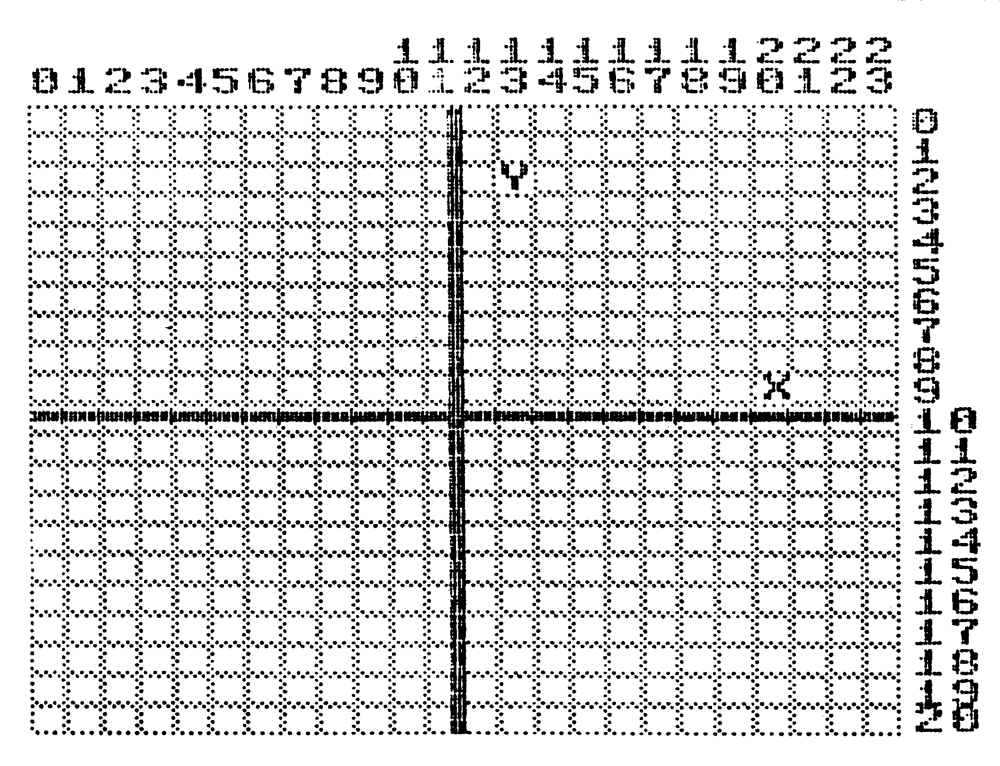
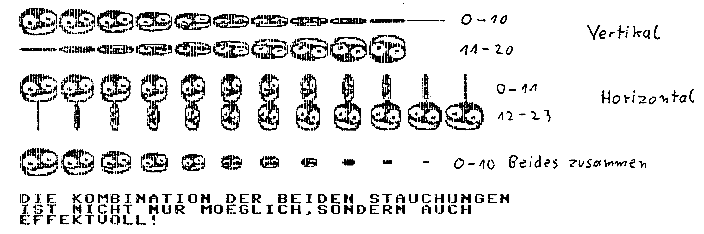

Und sie drehen sich doch
Leicht und komfortabel lassen sich beliebige Sprites um die X- und Y-Achse drehen. Auch das Verkleinern und Vergrößern dieser kleinen Kunstwerke ist kein Problem. Das spart Arbeit und Zeit.
Mit »Shrinksprite« (Listing 1), wie sich dieses Programm nennt, lassen sich Sprites horizontal und vertikal verkleinern oder aber an der X- und Y-Achse drehen. Da die veränderten Sprites in einem neuen Sprite-Block zwischengespeichert werden, bleibt das ursprüngliche Sprite in seiner vollen Pracht erhalten. Auf Wunsch läßt sich der entsprechende Sprite-Zeiger auf den neuen Block umschalten. Dadurch wird eine kontinuierliche, flimmerfreie Verformung ermöglicht.
Shrinksprite ist mit einem einfachen SYS-Aufruf mit Parameterübergabe zu starten:
SYS 49152 ‚ Ursprungsblock, Zielblock, vertikale Stauchung, horizontale Stauchung, Spritenummer
Ursprungsblock
Nach dem SYS-Aufruf und einem Komma folgt der zu behandelnde Sprite-Block (0 bis 255). Dadurch ist das Errechnen der Adresse ab der das Sprite gespeichert ist überflüssig.
Zielblock
Hier ist die Nummer des Blocks anzugeben, in den das geänderte Sprite gespeichert werden soll. Dieser Block darf mit dem Ursprungsblock identisch sein. Allerdings ist dann das ursprüngliche Sprite unwiderruflich verloren. Daher ist es ratsam, sich zu jedem behandelten Sprite einen anderen Zielblock zu suchen.
Vertikale und horizontale Stauchung
Um die horizontale und vertikale Stauchung zu verstehen, läßt sich die Stauchung des Sprites als Drehung um die eigene Achse interpretieren. Bei vertikaler Stauchung liegt die Drehachse auf der elften Bytereihe und bei der horizontalen Stauchung zwischen dem zwölften und dreizehnten Bit. Die Drehachsen teilen das Sprite in jeweils zwei gleiche Hälften (Bild 1). Sind die beiden angegebenen Drehfaktoren für die horizontale und vertikale Stauchung auf Null gesetzt, dann sieht das erzeugte Sprite genauso aus wie das ursprüngliche Sprite. Es hat sich also nichts geändert. Was aber passiert wenn der Drehfaktor größer wird? Bei vertikaler Drehung wird das Sprite mit zunehmendem Drehfaktor immer schmaler (Bild 2). Ist der Drehfaktor auf 10 gesetzt, sieht man nur noch einen vertikalen Strich. Das Sprite wurde um 90 Grad gedreht. Wird der Drehfaktor weiter bis maximal 20 erhöht, so wird das Sprite nicht nur breiter, sondern gleichzeitig an der Drehachse gespiegelt. Durch diesen Effekt läßt sich das Sprite tatsächlich von Null bis 180 Grad drehen.


Spritenummer
Die Spritenummer läßt das automatische Umschalten der Sprite-Zeiger auf bestimmte Sprites zu. So kann man eine kontinuierliche Bewegung erzeugen. Wird eine Sprite-Nummer zwischen Null und Sieben gewählt, schaltet der entsprechende Sprite-Zeiger um (bei Null wäre dies die Speicherzelle 2040, bei Eins 2041 und so weiter).
Die Wirkungs- und Funktionsweise von »Shrinksprite« ist in dem Demo (Listing 2) beschrieben. Laden Sie zuerst das Programm mit dem Namen »Loader« (Listing 3) und starten es mit RUN. Der Rest wird vom Programm erledigt.
Tips für Maschinenprogrammierer
Das Programm (Listing 1) belegt den Speicherbereich von $C000 bis $C33D plus 126 Byte für zwei Sprite-Puffer. Soll die Routine in ein Maschinenprogramm integriert werden, müssen die Speicherzellen $FB, $FC, $FD, $FE und $02 folgende Werte enthalten:
$FB -> Ursprungsblock
$FC -> Zielblock
$FD -> vertikale Stauchung
Anschließend muß »Shrinksprite« mit »J)MP $C01% oder »JSR $C01% aufgerufen werden.
$FE -> horizontale Stauchung $02 -> Sprite-Nummer
Wia funktianiart'e
'Nach der Parameterübergabe und deren Prüfung auf Richtigkeit wird zuerst das zu verändernde Sprite horizontal gestaucht und im ersten Sprite-Puffer gespeichert. Anschließend wird der Inhalt des Puffers vertikal gestaucht und im zweiten Sprite-Puffer gespeichert. Das Programm kopiert dann den Inhalt des zweiten Sprite-Puffers in den Zielblock und setzt den Sprite-Zeiger auf den Zielblock.
(B. Reike/ah)